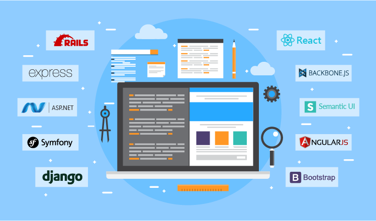

“CleanArchitecture 32장”
아무리 해도 프레임워크는 아키텍처가 될 수 없다.

프레임워크 제작자
- 프레임워크 제작자는 당신을 알지 못하며 당신이 풀어야 할 문제도 알지 못한다.
- 모든 프레임워크 사용자의 문제를 해결하기 위해서 프레임워크를 만들지 않는다.
혼인 관계의 비대칭성
당신은 프레임워크를 위해 대단히 큰 헌신을 해야 하지만, 프레임워크 제작자는 당신을 위해 아무런 헌신도 하지 않는다.
프레임 워크 제작자는
- 프레임 워크를 중점에 두고 우리의 아키텍처로 바깥을 감싸라고 말한다.
- 프레임워크 기반의 클래스에서 직접 파생하거나, 업무 객체에 바로 임포트해 사용하라고 말한다.
- 가능한 프레임 워크와 공고히 결합될 것을 말한다.
한번 결합하면 그 관계는 깨지기 매우 어렵다. 모든 위험과 부담은 오직 개발자의 몫이며, 제작자가 감수하는 건 아무것도 없다.
위험요인
- 프레임워크의 아키텍처는 그다지 깔끔하지 않은 경우가 많음
- 의존성 규칙을 위반하는 경향
- 업무 객체를 만들 때, 프레임워크의 코드를 상속할 것을 요구
- 초기 기능을 만드는데 도움이 되지만 제품이 성숙해지면서 프레임워크가 제공하는 기능과 틀을 벗어남
- 프레임워크는 개발자의 의도와 맞지 않는 방향으로 진화할 수 있음
- 새롭고 더 나은 프레임워크로 변경이 어려움
해결책
프레임워크와 결혼하지 말라!
프레임 워크를 아키텍처의 원 안쪽으로 들어오지 못하게 하자.
- 업무객체를 만들 때 proxy를 만들고 업무 규칙에 플러그인할 수 있는 컴포넌트에 proxy를 위치시키자.
- 프레임워크가 핵심 코드 안으로 들어오지 못하게 하자.
- 대신 핵심 코드에 플러그인할 수 있는 컴포넌트에 프레임워크를 통합하고, 의존성 규칙을 준수하라.
ex) 업무 객체에 도처한 @autowired 어노테이션 No! 업무 객체는 절대로 스프링을 알아서는 안됨 -> 메인 컴포넌트에서의 의존성 주입
이제 선언합니다
프레임워크와의 결합은 정상적이다. 하지만 선택적이여야 한다.
애플리케이션이 프레임워크와 결혼하고자 한다면 애플리케이션의 남은 생애 동안 그 프레임워크와 항상 함께 해야 한다는 사실을 반드시 명심해야 한다.
결론
프레임 워크와의 첫 만남부터 바로 결혼하려 들지 말라. 가급적이면 프레임워크를 가능한 한 오랫동안 아키텍처 경계 너머에 두자.